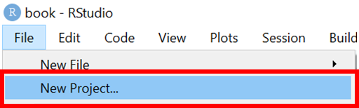

4 📘 Getting started with RStudio
4.1 Introduction
4.1.1 Overview
Please review the following sections for instructions on installation steps:
- Downloading R (Section A.1)
- Downloading and configuring RStudio (Section A.2)
4.1.2 Learning objectives
- Familiarise with RStudio
- Get set up with not storing the RStudio workspace
4.2 Orientation to the RStudio interface
Open RStudio
By default RStudio displays four rectangle panes.
If your RStudio displays only one left pane it is because you have no scripts open yet.
The R Console, by default the left or lower-left pane in R Studio, is the home of the R “engine”. This is where the commands are actually run and non-graphic outputs and error/warning messages appear. You can directly enter and run commands in the R Console, but realize that these commands are not saved as they are when running commands from a script.
This pane is similar to the Stata Command and the Results windows.
This pane, by default in the upper-left, is space to edit and run your scripts, including the RMarkdown outbreak and survey templates. This pane can also display datasets (data frames) for viewing.
This pane is similar to the Stata Do-file and Data Editor windows.
This pane, by default the upper-right, is most often used to see brief summaries of objects in the R Environment in the current session. These objects could include imported, modified, or created datasets, parameters you have defined (e.g. a specific epi week for the analysis), or vectors or lists you have defined during analysis (e.g. names of regions). Click on the arrow next to a dataframe name to see its variables.
This pane is similar to the Stata Variables Manager window.
The lower-right pane includes several tabs:
- Files (library of files)
- Plots (display of graphics including maps)
- Packages (available R packages including installation/update options)
- Help
- Viewer
- Presentation.
This pane contains the Stata equivalents of the Plots Manager and Project Manager windows.
4.3 Open a new R project
In RStudio, you can create a new project by selecting File > New Project…

Select New Directory

Select New Project

Select a location to save the new R project (this creates a new folder).

Save all relevant data files into this new R project folder.
We will use this project for the duration of the workshop.